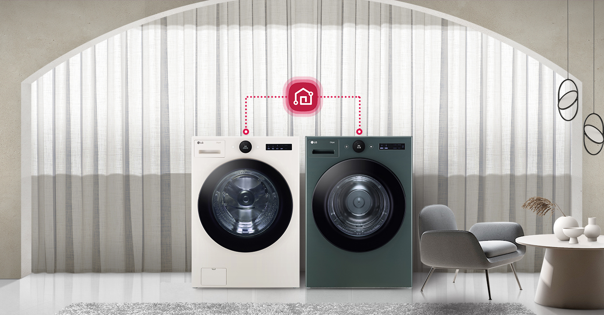
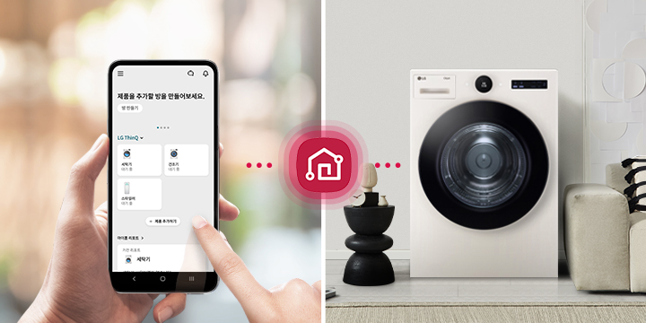
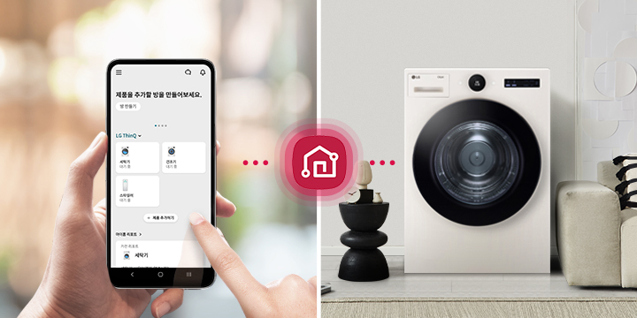

건조 과학의 완성 LG TROMM ThinQ 건조기 오브제컬렉션 - 6모션 건조 : 자연 건조방식 그대로 균일하고 섬세한 건조 - 공간 인테리어 가전 : 감탄을 자아내는 감각적인 디자인 - 트루스팀 : 국내 최대 용량 100℃ 트루스팀
오브제컬렉션 & 미니멀 플랫 디자인
공간에 감각을
더하는 디자인
우아하고 세련된 바디는 어떤 공간에서든
우월한 존재감을 드러냅니다.
맞춤 제작한
가구처럼 주변과도 조화롭게 어우러지죠
두 가지 컬러를 취향에 맞게 선택해 보세요.
우월한 존재감을 드러냅니다.
맞춤 제작한
가구처럼 주변과도 조화롭게 어우러지죠
두 가지 컬러를 취향에 맞게 선택해 보세요.
인공지능 DD모터
기술의 차이가 만드는
기술의 차이가 만드는
건조의 차이
소음은 줄이고 건조는 더 섬세해졌습니다.
모터와 드럼통이 하나로 연결된 DD 모터가
건조통 드럼의 움직임을 정교하게 조절해
옷감 수축은 줄이고 본연의 감촉은 살려내죠.
모터와 드럼통이 하나로 연결된 DD 모터가
건조통 드럼의 움직임을 정교하게 조절해
옷감 수축은 줄이고 본연의 감촉은 살려내죠.
인공지능 건조
빈틈없이 말려주는
초고속 건조
세탁물의 무게, 소재, 습도를 감지해 건조 시간,
온도, 횟수를 옷감 상태에 맞춰 스스로 설정합니다.
두꺼운 옷도 덜 마른 부분 없이 균일하게 건조하고
건조 시간도 줄여줍니다.
온도, 횟수를 옷감 상태에 맞춰 스스로 설정합니다.
두꺼운 옷도 덜 마른 부분 없이 균일하게 건조하고
건조 시간도 줄여줍니다.
- * 건조 시간 단축 : 약 18%, 일반 합성섬유 기준
조용조용 코스
일상에 방해 없이
조용하게
아이의 낮잠 시간이나 저녁 무렵 휴식을
방해받고 싶지 땐 조용조용 코스가 제격이죠.
전보다 소음을 확 낮춰 사용 시간대와
공간 제약 없이 편하게 쓸 수 있습니다.
방해받고 싶지 땐 조용조용 코스가 제격이죠.
전보다 소음을 확 낮춰 사용 시간대와
공간 제약 없이 편하게 쓸 수 있습니다.
이지 서클 컨트롤
간편하게 돌리고
한눈에 보는 쉬운 세탁
수많은 버튼을 하나의 화면에 담아
조작은 쉽고 디자인은 더 간결해졌습니다.
다이얼을 돌려 원하는 코스를 설정하고
세탁 시간, 알림은 한눈에 알아보세요.
조작은 쉽고 디자인은 더 간결해졌습니다.
다이얼을 돌려 원하는 코스를 설정하고
세탁 시간, 알림은 한눈에 알아보세요.
인공지능 스마트 케어
습관부터 날씨까지
일상맞춤 케어
평소 어떤 옷을 자주 입고 어떤 코스를 자주
쓰는지 당신의 습관을 기억해 최적의 코스를
추천합니다.
또한 외부 날씨도 스스로 인식해
필요한 코스를 알아서 추가해주죠.
쓰는지 당신의 습관을 기억해 최적의 코스를
추천합니다.
또한 외부 날씨도 스스로 인식해
필요한 코스를 알아서 추가해주죠.
-
* 표준코스에서 가장 최근의 5회 사용 패턴을 분석하여 3회 이상 반복한 옵션을 반영(구김 방지 및 다림질 알림 옵션 기준)한 결과치입니다.
* LG ThinQ 앱 연동 후 사용 가능합니다.
스마트 페어링
세탁부터 건조까지
하나의 기기처럼
LG 트롬 세탁기를 함께 사용 중이시라면
진행 중인 세탁 정보가 그대로 공유됩니다.
덕분에 따로 설정 없이도 세탁 코스에 맞게
최적의 건조 코스를 곧바로 진행할 수 있죠.
진행 중인 세탁 정보가 그대로 공유됩니다.
덕분에 따로 설정 없이도 세탁 코스에 맞게
최적의 건조 코스를 곧바로 진행할 수 있죠.


-
* 스마트 페어링 기능은 Wi-Fi 연결 및 LG ThinQ 앱에 제품 등록 후 사용할 수 있으며, Wi-Fi를 지원하는 LG 세탁기(드럼/통돌이)와 모두 페어링 가능합니다.
* 스마트 페어링 기능(건조기)은 일부 모델에서만 지원됩니다.
특허받은 100℃ 트루스팀
급이 다른 스팀
급이 다른 스팀
격이 다른 살균
살균 케어부터 의류 케어까지 트루스팀 하나로
깔끔하게 관리하세요.
99.99% 압도적 살균으로
옷감 깊숙이 밴 냄새 제거는 물론
구겨진 셔츠,
패딩의 볼륨감도 손쉽게 회복시킬 수 있습니다.
깔끔하게 관리하세요.
99.99% 압도적 살균으로
옷감 깊숙이 밴 냄새 제거는 물론
구겨진 셔츠,
패딩의 볼륨감도 손쉽게 회복시킬 수 있습니다.
-
* 인터텍(Intertek) 시험 결과, 자사가 제시한 기준으로 셔츠(면 65 %, 폴리 35 % 재질) 1벌, 3벌, 5벌 기준 스팀 리프레쉬 코스 동작 시 구김 완화 확인(AATCC 평가판 기준 초기 구김 대비 평균 2배 이상 완화됨)
* 인터텍 시험 결과, 자사가 제시한 기준으로 스팀옵션 적용, 건조 행정시간/자연 건조시간 비교 시 경량 덕다운 기준 패딩 볼륨감 복원력 최대 31 % 더 회복
* 한국의류시험연구원(KATRI) 시험 결과, KS K 0891(의류관리기 시험 준용), 패딩리프레쉬코스(패딩 1벌), 스팀리프레쉬코스(셔츠 1벌), 침구털기코스(이불 1채), 기능성 의류(운동복 2 kg), 아웃도어리프레쉬(아웃도어제킷 1벌) 기준 스팀옵션 선택 시 표준 직물의 15 cm x 15 cm 면적에 흡착시킨 냄새 농도를 비교하여 탈취 성능 평균 계산 시 4-에테닐 피리딘(담배) 99 %, 이소발레릭 애시드(땀) 99 % 제거함.
* 구김 완화, 패딩 볼륨감 복원력, 탈취 효과는 옷감이나 냄새 종류 등 실 사용 환경에 따라 차이가 있을 수 있습니다.
* 한국의류시험연구원(KATRI) 시험 결과, 국제 규격 시험 부하 6.4 kg 스팀 살균코스 기준. 유해세균(황색포도상구균, 녹농균, 폐렴간균) 99.99 % 살균. 살균효과는 세균의 종류, 사용환경 등에 따라 차이가 있을 수 있습니다.
* 100 ℃는 스팀 옵션 동작 시, 스팀발생기 내부온도 측정 기준입니다.
* 스팀 기능 선택이 가능한 코스는 표준, 셔츠, 타월, 아기옷, 기능성의류, 침구털기, 패딩리프레쉬, 아웃도어리프레쉬코스이며 스팀살균과 스팀리프레쉬코스는 스팀 기능이 기본으로 설정되는 코스입니다.
* Environmental Allergens INFO & CARE(일본소재) 시험결과, 자사가 제시한 기준으로 국제 규격 시험부하 6.4 kg 스팀살균코스 기준. 꽃가루 알러겐 (돼지풀, 벼과, 노송나무, 자작나무, 삼나무) 99.9 % 이상 불활성화.
* 살균효과는 꽃가루의 종류, 사용 환경, 실 사용 조건 등에 따라 차이가 있을 수 있습니다.
* 인터텍 시험 결과, 스팀살균코스로 집먼지진드기 100 % 사멸됨. 제거 효과는 사용 환경에 따라 차이가 있을 수 있습니다.
* 충남대학교 산학협력단 시험 결과, 국제규격부하 6.4 kg에 접종한 후 스팀살균코스 행정 시 코로나[MHV] 바이러스 99.99 % 제거함.
* MHV바이러스는 코로나 바이러스의 일종으로 신종 코로나바이러스 19(COVID-19)에 대한 시험 결과가 아님.
* 전남대학교 산학협력단 시험 결과, 면부하 1 kg에 KS포(면 100 %) 3장에 접종한 후 스팀살균코스 행정 시 인플루엔자 A(H3N2), 인플루엔자 A(H1N1), 엔테로 바이러스(PEV), 헤르페스바이러스(IBRV), 아데노바이러스(ICHV) 99.99 % 제거함.
* 상기 제거율은 실사용 조건에 따라 차이가 있을 수 있습니다.
* 한국의과학연구원(KRIBS) 시험 결과, 국제 규격 시험 부하 6.4 kg 스팀살균코스 기준. 유해세균(대장균) 99.99 % 살균. 살균효과는 세균의 종류, 사용환경 등에 따라 차이가 있을 수 있습니다.
* 국내최다 : 2020년 11월 국내판매 전기식 건조기 홈페이지 시험치 명시 기준(자사 16종=유해세균 4종+바이러스 6종+유해물질 6종)
옷감 수축 저감
내 옷을 지키는
최적의 모션과 온도
옷감에 닿는 물리적 충격을 최소화하고
섬유 조직 사이의 압축과 자극을 줄이는
최적의 온도로 옷감 수축을 확 낮췄습니다.
섬유 조직 사이의 압축과 자극을 줄이는
최적의 온도로 옷감 수축을 확 낮췄습니다.


국내 최대 20kg 대용량 건조
스케일이 다른 크기
용량부터 클래스가 다릅니다.
킹사이즈 이불
두 채도 동시에, 일주일 내내 가득 쌓인 빨래도
20kg 대용량으로 가뿐하게 해결할 수 있죠.
킹사이즈 이불
두 채도 동시에, 일주일 내내 가득 쌓인 빨래도
20kg 대용량으로 가뿐하게 해결할 수 있죠.

에어부스터+
대용량에 걸맞은
대용량에 걸맞은
강력한 바람
상하좌우 전 방향 장착된 546개 에어부스터는
국내 최대 20kg 대용량도 가뿐하게 커버합니다.
옷감 무게와 재질에 따라 바람의 세기를 조절해
덜 마르는 부분 없이 섬세한 건조가 가능하죠.
국내 최대 20kg 대용량도 가뿐하게 커버합니다.
옷감 무게와 재질에 따라 바람의 세기를 조절해
덜 마르는 부분 없이 섬세한 건조가 가능하죠.
-
* 한국의과학연구원 시험 결과, 자사가 제시한 기준으로 유해세균 4종(황색포도상구균, 녹농균, 폐렴간균, 대장균) 평균 99.9 % 살균
* 실험실 측정 기준으로 실사용 환경에서는 달라질 수 있습니다.
통살균 코스
믿고 맡기는 건조기 청결
건조기 내부 청소도 버튼 하나만 누르세요.
깨끗한 물을 끓여 만든 100℃ 고온 스팀이
드럼통 내부 및 필터에
남은 먼지와 물때는
물론 바이러스까지 99.99% 살균해줍니다.
깨끗한 물을 끓여 만든 100℃ 고온 스팀이
드럼통 내부 및 필터에
남은 먼지와 물때는
물론 바이러스까지 99.99% 살균해줍니다.
-
* 한국의과학연구원 시험 결과, 자사가 제시한 기준으로 유해세균 4종(황색포도상구균, 녹농균, 폐렴간균, 대장균) 평균 99.9 % 살균
* 실험실 측정 기준으로 실사용 환경에서는 달라질 수 있습니다.
듀얼 인버터 컴프레서/모터
쓸수록 마음 놓이는
쓸수록 마음 놓이는
놀라운 에너지 절약
혁신적 기술로 탄생한 듀얼 인버터 컴프레서와
모터는
1등급 에너지 효율로 전기료 부담을 확
줄여줍니다.
또한 10년 무상보증으로 혹시 모를
상황에도 안심하고 대비할 수 있죠.
모터는
1등급 에너지 효율로 전기료 부담을 확
줄여줍니다.
또한 10년 무상보증으로 혹시 모를
상황에도 안심하고 대비할 수 있죠.
-
* 건조기 에너지 소비효율 등급 규격기준에 따라 국제규격시험부하(IEC)로 표준코스(+자동모드+표준조건)에서만 시험한 결과임.(건조 코스/모드 및 사용조건에 따라 결과가 상이할 수 있음.)
* 에너지 소비효율 규격에 따른 에너지라벨 표기치 기준, 자사 16kg 기존 모델 연간 비용 65,000원에서 44,000원으로 절감.

-
* 건조기 에너지 소비효율 등급 규격기준에 따라 국제규격시험부하(IEC)로 표준코스(+자동모드+표준조건)에서만 시험한 결과임.(건조 코스/모드 및 사용조건에 따라 결과가 상이할 수 있음.)
* 에너지 소비효율 규격에 따른 에너지라벨 표기치 기준, 자사 16kg 기존 모델 연간 비용 65,000원에서 44,000원으로 절감.
LG ThinQ 앱
어디서든 무엇이든
바로바로
당신의 일상에 맞춰 당신만의 코스를 만들고
필요한 알림과 궁금한 내용은 빠르게 알려주는
LG ThinQ로 건조 생활, 스마트하게 시작하세요.
필요한 알림과 궁금한 내용은 빠르게 알려주는
LG ThinQ로 건조 생활, 스마트하게 시작하세요.
 

-
* 해당 기능 사용을 위해서는 스마트폰의 Google Play Store 혹은 Apple App Store에서 'LG ThinQ' 앱을 설치 후 Wi-Fi 연결이 필요합니다. 자세한 사용 방법은 애플리케이션의 도움말을 참고 부탁드립니다.
* LG ThinQ 앱은 일부 스마트폰에서 기능 사용이 제한되거나 작동하지 않을 수 있으니, 최소 사양을 확인 후 사용하세요. (Android OS 5.0 이상, iOS 10.0 이상)
* 제품 이미지 및 특장점 등에는 이해를 돕기 위해 연출된 이미지가 포함되어 실제 제품과 차이가 있을 수 있으며, 사용 환경에 따라 차이가 있을 수 있습니다.